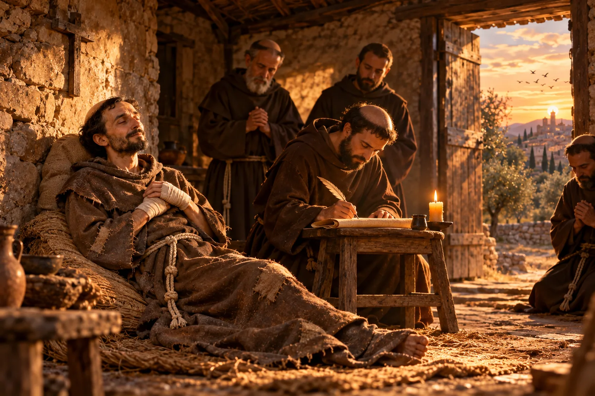

Palavras de São Francisco: o Testamento e as Admoestações
Francisco não escreveu livros, mas deixou textos curtos, ditados aos irmãos, que atravessaram 800 anos. Aqui estão o seu Testamento completo, com notas para entender cada parte, e uma seleção das Admoestações, os conselhos que ele dava aos frades.

Quase tudo o que sabemos de São Francisco chegou até nós por meio de outras pessoas: os biógrafos, os companheiros, os pintores. Mas há um pequeno conjunto de textos em que é ele mesmo quem fala. Os estudiosos chamam esse conjunto de “Escritos de São Francisco”: são cartas, orações, as Regras, o Testamento e as Admoestações.
Francisco quase não escrevia de próprio punho. Na maior parte das vezes, ditava, e um irmão punha as palavras no papel em latim simples, às vezes com expressões do italiano falado em Assis. Por isso, esses textos têm um jeito de conversa, cheio de “e… e… e…”, como quem conta uma história de memória.
Sobre a tradução: os textos desta página foram traduzidos por A Boa Idade a partir do original em latim da edição crítica de Kajetan Esser, a referência dos estudos franciscanos. Procuramos ficar o mais perto possível das palavras de Francisco, mesmo quando o português fica menos “bonito”. Os números pequenos indicam a numeração dos versículos usada pelos estudiosos.
O Testamento
Nos últimos meses de vida, em 1226, já muito doente, cego e com o corpo marcado pelos estigmas, Francisco ditou aos irmãos este texto. Ele mesmo o chamou de recordação, admoestação, exortação e testamento. É o mais pessoal de todos os seus escritos: nele, Francisco olha para trás, conta como tudo começou e diz aos irmãos o que não podem esquecer.
“O Senhor me deu começar”: a conversão
1O Senhor concedeu a mim, Frei Francisco, começar a fazer penitência assim: quando eu estava em pecados, parecia-me amargo demais ver os leprosos. 2E o próprio Senhor me conduziu entre eles, e eu usei de misericórdia com eles. 3E, quando me afastei deles, aquilo que me parecia amargo se converteu para mim em doçura da alma e do corpo. Depois disso, esperei um pouco e deixei o mundo.
Nota: repare que Francisco não começa falando de visões nem do crucifixo de São Damião. Para ele, a conversão começou no encontro com os leprosos, as pessoas que ele mais evitava. “Deixar o mundo”, na linguagem da época, quer dizer abandonar o modo de vida de antes, voltado para a riqueza e a fama.
A fé nas igrejas e nos sacerdotes
4E o Senhor me deu tanta fé nas igrejas que eu rezava assim, com simplicidade, e dizia:
5Nós vos adoramos, Senhor Jesus Cristo, também em todas as vossas igrejas que há no mundo inteiro, e vos bendizemos, porque pela vossa santa cruz remistes o mundo.
6Depois, o Senhor me deu e me dá tanta fé nos sacerdotes que vivem segundo a forma da santa Igreja Romana, por causa da sua ordem, que, mesmo que me perseguissem, quero recorrer a eles. 7E, se eu tivesse tanta sabedoria quanto teve Salomão e encontrasse sacerdotes pobrezinhos deste mundo, nas paróquias onde vivem, não quero pregar contra a vontade deles. 8E a eles e a todos os outros quero temer, amar e honrar como meus senhores. 9E não quero considerar neles o pecado, porque neles reconheço o Filho de Deus, e eles são meus senhores.
10E faço isso porque, neste mundo, nada vejo corporalmente do próprio altíssimo Filho de Deus, a não ser o seu santíssimo corpo e o seu santíssimo sangue, que eles recebem e só eles ministram aos outros. 11E quero que estes santíssimos mistérios sejam, acima de tudo, honrados, venerados e guardados em lugares dignos. 12Onde quer que eu encontre os seus santíssimos nomes e as suas palavras escritas em lugares impróprios, quero recolhê-los, e peço que sejam recolhidos e postos em lugar digno. 13E a todos os teólogos e aos que ministram as santíssimas palavras divinas devemos honrar e venerar, como a quem nos ministra espírito e vida.
Nota: numa época em que muitos movimentos de pobreza criticavam duramente os padres, Francisco faz o contrário. Ele fala com carinho dos “sacerdotes pobrezinhos” das paróquias, muitas vezes simples e sem estudo, e diz que não pregaria nas paróquias deles sem a sua permissão. O motivo é a Eucaristia: é pelas mãos dos sacerdotes que ele “vê” o Filho de Deus neste mundo.
Como viviam os primeiros irmãos
14E, depois que o Senhor me deu irmãos, ninguém me mostrava o que eu devia fazer, mas o próprio Altíssimo me revelou que eu devia viver segundo a forma do santo Evangelho. 15E eu o fiz escrever em poucas palavras e com simplicidade, e o senhor Papa o confirmou para mim.
16E os que vinham para abraçar esta vida davam aos pobres tudo o que podiam ter; e se contentavam com uma só túnica, remendada por dentro e por fora, com o cordão e os calções. 17E não queríamos ter mais nada. 18Os clérigos rezavam o Ofício como os outros clérigos; os leigos diziam o Pai-Nosso. E ficávamos de muito bom grado nas igrejas. 19E éramos iletrados e submissos a todos.
20E eu trabalhava com as minhas mãos, e quero trabalhar; e quero firmemente que todos os outros irmãos trabalhem num trabalho honesto. 21Os que não sabem, aprendam, não pela ambição de receber o pagamento do trabalho, mas pelo exemplo e para afastar a ociosidade. 22E, quando não nos derem o pagamento do trabalho, recorramos à mesa do Senhor, pedindo esmola de porta em porta.
23O Senhor me revelou esta saudação, para que disséssemos: “O Senhor te dê a paz.”
Nota: o versículo 14 é um dos mais importantes de toda a história franciscana: Francisco afirma que ninguém lhe ensinou o caminho; foi Deus quem lhe mostrou que bastava viver o Evangelho. O versículo 15 se refere à aprovação verbal do Papa Inocêncio III, em 1209. E a saudação do versículo 23 é a origem do “Paz e bem” que os franciscanos usam até hoje.
Pobreza e obediência
24Cuidem-se os irmãos de não aceitar de modo algum igrejas, moradias pobrezinhas nem nada do que se constrói para eles, se não estiverem de acordo com a santa pobreza que prometemos na Regra, hospedando-se sempre ali como forasteiros e peregrinos.
25Ordeno firmemente, por obediência, a todos os irmãos que, onde quer que estejam, não ousem pedir carta alguma à Cúria Romana, nem pessoalmente nem por meio de outra pessoa: nem a favor de uma igreja, nem de outro lugar, nem a pretexto de pregação, nem por causa de perseguição aos seus corpos; 26mas, onde não forem recebidos, fujam para outra terra para fazer penitência, com a bênção de Deus.
27E quero firmemente obedecer ao ministro geral desta fraternidade e ao guardião que ele achar por bem me dar. 28E quero ser de tal modo prisioneiro em suas mãos que não possa ir nem fazer nada além da obediência e da vontade dele, porque ele é meu senhor. 29E, embora eu seja simples e doente, quero sempre ter um clérigo que reze comigo o Ofício, como está na Regra. 30E todos os outros irmãos sejam obrigados a obedecer assim aos seus guardiães e a rezar o Ofício segundo a Regra.
31E, se houver irmãos que não rezem o Ofício segundo a Regra e queiram mudá-lo de outro modo, ou que não sejam católicos, todos os irmãos, onde quer que estejam, sejam obrigados por obediência a apresentá-lo ao custódio mais próximo do lugar onde o encontrarem. 32E o custódio seja firmemente obrigado, por obediência, a guardá-lo com rigor, como a um homem em correntes, dia e noite, de modo que não possa ser tirado de suas mãos, até entregá-lo pessoalmente nas mãos do seu ministro. 33E o ministro seja firmemente obrigado, por obediência, a enviá-lo por meio de irmãos que o guardem dia e noite como a um homem em correntes, até que o apresentem diante do senhor de Óstia, que é senhor, protetor e corretor de toda a fraternidade.
Nota: esta é a parte mais dura do Testamento, e é preciso lê-la no seu tempo. A Ordem já tinha milhares de frades, e Francisco temia que ela se afastasse da pobreza e da fé da Igreja, num século marcado por heresias. Por isso proíbe os “privilégios” pedidos ao Papa (v. 25) e manda levar ao cardeal protetor quem se desviasse (v. 31-33). O “senhor de Óstia” era o cardeal Hugolino, amigo de Francisco, que dois anos depois, já como Papa Gregório IX, o proclamou santo. Repare também na humildade do versículo 28: o fundador da Ordem quer ser “prisioneiro” da obediência.
“Isto não é outra Regra”: a bênção final
34E não digam os irmãos: “Esta é outra Regra”; porque esta é uma recordação, uma admoestação, uma exortação e o meu testamento, que eu, o pequenino Frei Francisco, faço a vós, meus benditos irmãos, para que observemos de modo mais católico a Regra que prometemos ao Senhor. 35E o ministro geral e todos os outros ministros e custódios sejam obrigados, por obediência, a não acrescentar nem tirar nada destas palavras. 36E tenham sempre este escrito consigo, junto da Regra. 37E, em todos os capítulos que fizerem, quando lerem a Regra, leiam também estas palavras.
38E a todos os meus irmãos, clérigos e leigos, ordeno firmemente por obediência que não ponham glosas na Regra nem nestas palavras, dizendo: “Assim devem ser entendidas”; 39mas, assim como o Senhor me concedeu dizer e escrever a Regra e estas palavras com simplicidade e pureza, assim, com simplicidade e sem glosa, as entendais e, com santas obras, as observeis até o fim.
40E quem observar estas coisas seja cumulado, no céu, da bênção do altíssimo Pai, e, na terra, da bênção do seu amado Filho, com o santíssimo Espírito Paráclito e com todas as virtudes dos céus e todos os santos. 41E eu, Frei Francisco, o pequenino, vosso servo, quanto posso, confirmo-vos por dentro e por fora esta santíssima bênção. Amém.
Nota: “glosa” era o nome das explicações que os estudiosos escreviam nas margens dos livros. Francisco pede que a Regra seja vivida “sem glosa”, isto é, sem interpretações que a amoleçam. A expressão se tornou famosa e até hoje resume o jeito franciscano de viver o Evangelho: com simplicidade, ao pé da letra.
As Admoestações
As Admoestações são 28 ensinamentos curtos que Francisco dava aos irmãos, provavelmente nos encontros anuais da Ordem, os “capítulos”. Muitas começam como as bem-aventuranças de Jesus: “Bem-aventurado o servo que…”. Falam de humildade, paciência, paz e caridade, e valem para qualquer pessoa, frade ou não. Aqui está uma seleção das mais marcantes.
A dignidade de cada pessoa
Considera, ó homem, em que excelência te colocou o Senhor Deus: Ele te criou e formou à imagem do seu amado Filho, segundo o corpo, e à sua semelhança, segundo o espírito. E todas as criaturas que existem debaixo do céu, cada uma a seu modo, servem, conhecem e obedecem ao seu Criador melhor do que tu.
Saber não basta
Estão mortos pela letra aqueles que só desejam saber as palavras, para serem tidos como mais sábios que os outros e para ganharem grandes riquezas e dá-las aos parentes e amigos. E são vivificados pelo espírito da divina Escritura aqueles que não atribuem a si mesmos o que sabem e desejam saber, mas, pela palavra e pelo exemplo, o devolvem ao altíssimo Senhor Deus, a quem pertence todo bem.
A paciência só se conhece na contrariedade
Não se pode saber quanta paciência e humildade tem o servo de Deus enquanto tudo corre a seu gosto. Mas, quando chega a hora em que aqueles que deviam agradá-lo fazem o contrário, a paciência e a humildade que ele mostrar então, essas ele tem, e não mais.
A verdadeira pobreza de espírito
“Bem-aventurados os pobres de espírito, porque deles é o Reino dos Céus.” Há muitos que rezam muito, cumprem muitas devoções e fazem muitos sacrifícios no corpo; mas, por uma só palavra que pareça ofendê-los, ou por alguma coisa que lhes tirem, logo se escandalizam e se perturbam. Esses não são pobres de espírito. Porque quem é verdadeiramente pobre de espírito odeia a si mesmo e ama aqueles que lhe batem na face.
Os verdadeiros pacíficos
“Bem-aventurados os pacíficos, porque serão chamados filhos de Deus.” São verdadeiramente pacíficos aqueles que, em tudo o que sofrem neste mundo, por amor de nosso Senhor Jesus Cristo, conservam a paz na alma e no corpo.
Suportar o outro como gostaríamos de ser suportados
Bem-aventurado o homem que suporta o próximo na fragilidade dele, assim como gostaria de ser suportado por ele, se estivesse em situação semelhante.
O que somos diante de Deus
Quanto o homem é aos olhos de Deus, tanto ele é, e nada mais.
Receber a correção
Bem-aventurado o servo que aceita a orientação, a acusação e a repreensão de outro com a mesma paciência com que as aceitaria de si mesmo.
O amor verdadeiro
Bem-aventurado o servo que ama o seu irmão quando está doente, e não pode lhe dar nada em troca, tanto quanto o ama quando está com saúde e pode retribuir.
Onde há caridade, não há medo
Esta é talvez a Admoestação mais conhecida, quase um poema:
Onde há caridade e sabedoria, não há medo nem ignorância.
Onde há paciência e humildade, não há ira nem perturbação.
Onde há pobreza com alegria, não há cobiça nem avareza.
Onde há sossego e meditação, não há preocupação nem dispersão.
Onde há o temor do Senhor para guardar a casa, o inimigo não encontra por onde entrar.
Onde há misericórdia e discernimento, não há excesso nem dureza de coração.
O tesouro escondido
Bem-aventurado o servo que guarda no céu os bens que o Senhor lhe mostra, e não deseja revelá-los aos homens em busca de recompensa, porque o próprio Altíssimo manifestará as suas obras a quem Ele quiser.
A verdadeira e perfeita alegria
Entre os escritos de Francisco há ainda um pequeno texto que ele ditou a Frei Leão e que ficou famoso com o nome de “Da verdadeira e perfeita alegria”. Francisco imagina todas as notícias que fariam um frade feliz: que os maiores mestres de Paris entraram na Ordem, que reis e bispos se converteram, que os irmãos converteram povos distantes, que ele mesmo faz milagres. E, a cada uma, responde: não está aí a verdadeira alegria.
Então descreve uma cena: ele chega de noite, no inverno, molhado, com frio e com as pernas feridas, e bate à porta do próprio convento. O porteiro não o reconhece, o chama de impostor e o manda embora. Francisco insiste, e de novo é rejeitado. Se, mesmo assim, ele tiver paciência e não se perturbar, conclui: aí está a verdadeira alegria, a verdadeira virtude e a salvação da alma.
É um texto que desconcerta, e por isso mesmo atravessou os séculos: para Francisco, a alegria não depende do sucesso nem do reconhecimento, mas da paz que nada consegue tirar.
Para continuar
- Conheça a vida de Francisco na biografia São Francisco de Assis: do filho do rico comerciante ao Pobrezinho de Deus.
- Veja o que disseram dele, de Santa Clara aos Papas, em O que disseram de São Francisco.
- Reze com ele a Oração diante do Crucifixo, com reflexão do Sr. Oliveira.
Fontes principais
- Kajetan Esser (ed.) — Die Opuscula des hl. Franziskus von Assisi, edição crítica dos Escritos de São Francisco (texto latino do Testamento e das Admoestações).
- Testamentum — texto latino reproduzido a partir da edição crítica, Universidade de Trieste (material de estudo).
- Robert J. Karris, OFM — The Admonitions of St. Francis: Sources and Meanings. Franciscan Institute Publications.
- De vera et perfecta laetitia — texto ditado a Frei Leão, conservado nos Escritos de São Francisco.
- Fontes Franciscanas — coletânea dos escritos e das biografias de São Francisco.